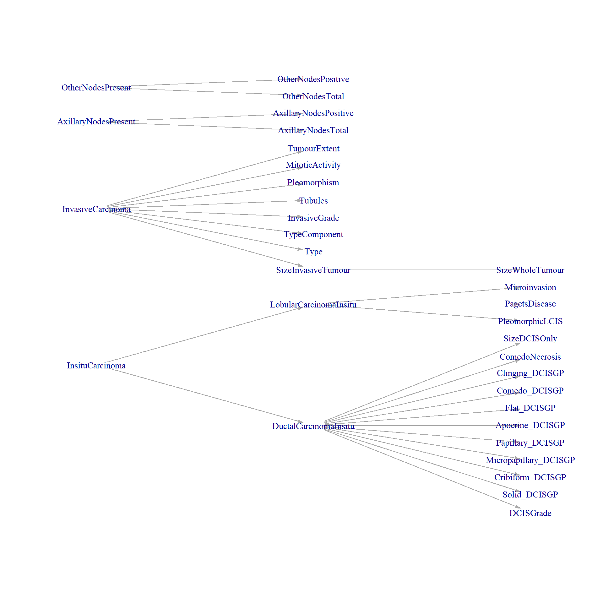

library(tidyverse)
library(summarytools)
# st_options(plain.ascii = FALSE, # Always use in Rmd documents
# style = "rmarkdown", # Always use in Rmd documents
# subtitle.emphasis = FALSE,
# headings = FALSE) # Improves layout w/ some themes
library(readxl)
library(dplyr)
library(gt)
library(tidyr)
library(rlang)
library(purrr)
library(igraph)
library(knitr)
# opts_chunk$set(results = 'asis', # Can also be set at chunk level
# comment = NA,
# prompt = FALSE,
# cache = FALSE)Histopathology QC
This code is to assess the quality of the histopathology data and to indicate changes where needed.
Packages
Read in Data
hpdata <- read.csv("R:/CoreData/v20230927/RDSHistopath_BrCa_GS_QC.csv", na.strings = "NULL")
datadict <- read_excel("C:/Users/rfrost/Documents/Misc/Histopathology QC/Histopath DD - LLM.xlsx", na = "NULL")Functions
get_missing_factors <- function(varname, df = hpdata, dict=datadict){
first_row <- which(dict$FieldName==varname)
if(length(first_row)==0){
cat("Variable not in Data Dictionary")
} else {
dict2 <- dict[first_row:nrow(dict),]
last_row <- min(min(which(!is.na(dict2$FieldName))[-1])-1, nrow(dict2))
dict_var <- dict2[1:last_row,] #Extracting section of dictionary relevant to the variable of interest
dict_codes <- dict_var$Code #Getting possible codes for variable
df_codes <- unique(df[,colnames(df)==varname])
df_codes <- df_codes[!is.na(df_codes)] #Getting codes in the dataset
missing_codes <- setdiff(df_codes, dict_codes) #Seeing what codes are missing from the data dictionary that are in the dataset
if(length(missing_codes)>0){
cat(paste(length(missing_codes), "Missing Codes"), paste("Missing Codes:", paste(missing_codes, collapse = ", ")), sep = "\n")
} else {
cat("No Missing Codes")
}
}
}
get_missing_factors_raw <- function(varname, df = hpdata, dict=datadict){
first_row <- which(dict$FieldName==varname)
dict2 <- dict[first_row:nrow(dict),]
last_row <- min(min(which(!is.na(dict2$FieldName))[-1])-1, nrow(dict2))
dict_var <- dict2[1:last_row,]
dict_codes <- dict_var$Code
df_codes <- unique(df[,colnames(df)==varname])
df_codes <- df_codes[!is.na(df_codes)]
missing_codes <- setdiff(df_codes, dict_codes)
return(missing_codes)
}
get_crosscheck_errors <- function(varname, df = hpdata, dict=datadict){
first_row <- which(dict$FieldName==varname)
dict2 <- dict[first_row:nrow(dict),]
last_row <- min(min(which(!is.na(dict2$FieldName))[-1])-1, nrow(dict2))
dict_var <- dict2[1:last_row,]
dict_var <- dict_var[!is.na(dict_var$Variable_Value),] #Extracting section of dictionary relevant to the variable of interest
invalid_totals <- pmap_dfr(dict_var, cross_check, df1 = df) #Applying crosscheck function to every rule that applies to the variable.
invalid_totals <- invalid_totals[invalid_totals$total>0,]
if(nrow(invalid_totals)>0){
for (i in seq_len(nrow(invalid_totals))) {
if(invalid_totals$total[i]<10){
cat(paste(invalid_totals$total[i], "Invalid Values where", invalid_totals$Comment[i]), "\n") #If there are mistakes, report number and TCodes for investigation.
cat("Invalid Codes:", invalid_totals$codes[i], "\n\n")
} else {
cat(paste(invalid_totals$total[i], "Invalid Values where", invalid_totals$Comment[i]), "\n\n")
}
}
} else {
cat("No Invalid Values")
}
}
total_crosscheck_errors <- function(df = hpdata, dict=datadict){
invalid_totals <- pmap_dfr(dict, cross_check, df1 = df)
invalid_totals <- invalid_totals[invalid_totals$total>0,]
if(nrow(invalid_totals)>0){
for (i in seq_len(nrow(invalid_totals))) {
if(invalid_totals$total[i]<10){
cat(paste(invalid_totals$total[i], "Invalid Values where", invalid_totals$Comment[i]), "\n") #If there are mistakes, report number and TCodes for investigation.
cat("Invalid Codes:", invalid_totals$codes[i], "\n\n")
} else {
cat(paste(invalid_totals$total[i], "Invalid Values where", invalid_totals$Comment[i]), "\n\n")
}
}
} else {
cat("No Invalid Values")
}
}
cross_check <- function(Condition_1, Condition_2, Condition_3, Condition_4, Variable_Value, Comment, df1, ...){
Condition_1 = ifelse(!is.na(Condition_1), Condition_1, 'TRUE')
Condition_2 = ifelse(!is.na(Condition_2), Condition_2, 'TRUE')
Condition_3 = ifelse(!is.na(Condition_3), Condition_3, 'TRUE')
Condition_4 = ifelse(!is.na(Condition_4), Condition_4, 'TRUE')
invalid_totals <- df1 |>
dplyr::filter(eval(parse_expr(Condition_1))) |>
dplyr::filter(eval(parse_expr(Condition_2))) |>
dplyr::filter(eval(parse_expr(Condition_3))) |>
dplyr::filter(eval(parse_expr(Condition_4))) |>
dplyr::filter(eval(parse_expr(Variable_Value))) |>
dplyr::summarise(total = n(), invalid_codes = paste(TCode, collapse = ", "))
return(data.frame(Comment, total = invalid_totals$total, codes = invalid_totals$invalid_codes))
}
get_dependencies <- function(varname, dict=datadict, df = hpdata){ ##THIS DOESN'T WORK DUE TO NESTING OF type. CONSIDER SPLITTING ON "(, ), -, +, etc AND LOOKING FOR EXACT MATCHES"
variable_list <- unique(dict$FieldName[!is.na(dict$FieldName) & dict$`Used by LLM?`=="yes"])
first_row <- which(dict$FieldName==varname)
dict2 <- dict[first_row:nrow(dict),]
last_row <- min(min(which(!is.na(dict2$FieldName))[-1])-1, nrow(dict2))
dict_var <- dict2[1:last_row,]
# dict_var <- dict_var[!is.na(dict_var$Variable_Value),]
deps <- colSums(sapply(variable_list, function(pattern) {
strings <- list_c(str_split(c(dict_var$Variable_Value, dict_var$Condition_1, dict_var$Condition_2, dict_var$Condition_3, dict_var$Condition_4), pattern = "\\.|\\(|\\)|\\-|\\>|\\<|\\=|\\!"))
#str_detect(strings, pattern)
strings == pattern
}), na.rm = T)>0
return(deps)
# deps <- pmap_dfr(dict_var, get_dep_var, variable_list)
}
freq_labelled_factor <- function(varname, df = hpdata, dict = datadict){
first_row <- which(dict$FieldName==varname)
dict2 <- dict[first_row:nrow(dict),]
last_row <- min(min(which(!is.na(dict2$FieldName))[-1])-1, nrow(dict2))
dict_var <- dict2[1:last_row,]
dict_var <- dict_var[!is.na(dict_var$Code),]
data <- factor(df[,colnames(df)==varname], levels = dict_var$Code, labels = dict_var$CodeLabel)
freq(data, cumul = F, order = "freq")
}
ctable_labelled <- function(varname1, varname2, df = hpdata, dict = datadict){
first_row <- which(dict$FieldName==varname1)
dict2 <- dict[first_row:nrow(dict),]
last_row <- min(min(which(!is.na(dict2$FieldName))[-1])-1, nrow(dict2))
dict_var <- dict2[1:last_row,]
dict_var <- dict_var[!is.na(dict_var$Code),]
data1 <- factor(df[,colnames(df)==varname1], levels = dict_var$Code, labels = dict_var$CodeLabel)
first_row <- which(dict$FieldName==varname2)
dict2 <- dict[first_row:nrow(dict),]
last_row <- min(min(which(!is.na(dict2$FieldName))[-1])-1, nrow(dict2))
dict_var <- dict2[1:last_row,]
dict_var <- dict_var[!is.na(dict_var$Code),]
data2 <- factor(df[,colnames(df)==varname2], levels = dict_var$Code, labels = dict_var$CodeLabel)
if(length(levels(data1))>length(levels(data2))){
ctable(data1, data2, prop = "t", dnn = c(varname1, varname2))
} else {
ctable(data2, data1, prop = "t", dnn = c(varname2, varname1))
}
}QC
General Analysis
Data Structure(?)
variable_list <- unique(datadict$FieldName[!is.na(datadict$FieldName) & datadict$`Used by LLM?`=="yes"])
network_table <- sapply(variable_list, get_dependencies)
graph <- graph_from_adjacency_matrix(network_table, mode = "directed", diag = FALSE)
graph <- delete.vertices(graph, which(degree(graph)==0))
layout <- layout_as_tree(graph)%*%matrix(c(0,-1,1,0), 2)
plot.igraph(graph, layout = layout, edge.arrow.size=0.4, vertex.size = 10, vertex.label.cex = 0.9, vertex.shape = "none")
Missing Codes
This is quick generated list of missing codes in the Data Dictionary. This excludes TNM coding which is analysed separately. If reading for the purpose of recoding, check this table out, then go to the TNM section and all bases should be covered.
factor_vars <- datadict$FieldName[datadict$Datatype%in%c("varchar", "char") & datadict$`Used by LLM?`=="yes" & datadict$DataLength<6] #Would like to change this arbitrary <6 bit here
general_factor_analysis <- data.frame(variable_name = factor_vars, missing_factors = NA)
general_factor_analysis$missing_factors <- lapply(general_factor_analysis$variable_name, get_missing_factors_raw)
general_factor_analysis <- general_factor_analysis |>
rowwise() |>
filter(length(missing_factors)>0)
gt(general_factor_analysis)| variable_name | missing_factors |
|---|---|
| Side | l |
| Solid_DCISGP | Y |
| Cribiform_DCISGP | Y |
| Micropapillary_DCISGP | Y |
| Papillary_DCISGP | Y |
| Apocrine_DCISGP | Y |
| Flat_DCISGP | Y |
| Comedo_DCISGP | Y |
| Clinging_DCISGP | Y |
| InvasiveGrade | 1 |
| AxillaryNodesPresent | y |
| PR_Status | p |
Just a few issues here coming from TRUE/FALSE coding in the data dictionary to Y/N coding in the data. Also a few upper/lower case issues which should be easily solved.
Crosscheck Errors
Running code to check for crosscheck errors in the code:
total_crosscheck_errors()7 Invalid Values where No DCIS but DCIS Grade not NA
Invalid Codes: T279H845, T286I590, T313I974, T331G164, T352E642, T430H109, T473G692
2 Invalid Values where DCIS NA but DCIS Grade not NA
Invalid Codes: T336F827, T415J855
4 Invalid Values where No Insitu Carcinoma Present, but LCIS Present
Invalid Codes: T420G212, T435E514, T460F219, T490J879
1 Invalid Values where Insitu Carcinoma Present NA, but LCIS Present
Invalid Codes: T363G340
7 Invalid Values where LCIS NA but Pleomorphic LCIS not NA
Invalid Codes: T263H173, T273J199, T289H877, T319E954, T357C168, T392D113, T440G132
3 Invalid Values where No LCIS but Pagets Disease present
Invalid Codes: T330D785, T366H549, T438C784
19 Invalid Values where LCIS NA but Pagets Disease present
6 Invalid Values where No LCIS but Microinvasion present
Invalid Codes: T326D881, T336E882, T394H693, T414F603, T444E938, T499J519
63 Invalid Values where LCIS NA but Microinvasion present
4 Invalid Values where Invasive Tumour Larger than Whole Tumour
Invalid Codes: T331J679, T354C704, T354C784, T404E090
1 Invalid Values where Invasive Tumour NA but Type is not NA
Invalid Codes: T440G516
1 Invalid Values where Invasive Tumour NA but Grade is not NA
Invalid Codes: T440G516
1 Invalid Values where Invasive Tumour NA but Tubules is not NA
Invalid Codes: T440G516
1 Invalid Values where Invasive Tumour NA but Pleomorphism is not NA
Invalid Codes: T440G516
1 Invalid Values where Invasive Tumour NA but Mitotic Activity is not NA
Invalid Codes: T440G516
32 Invalid Values where No Invasive Tumour but Tumour Extent is not NA
1 Invalid Values where Axillary Nodes NA but Total Nodes not NA
Invalid Codes: T389C520
1 Invalid Values where Axillary Nodes NA but Positive Nodes not NA
Invalid Codes: T389C520
1 Invalid Values where Other Nodes Not Present but Total Nodes not NA
Invalid Codes: T384J807
1 Invalid Values where Other Nodes Not Present but Positive Nodes not NA
Invalid Codes: T384J807 Variable Check
dict_variables <- datadict$FieldName
dict_variables <- dict_variables[!is.na(dict_variables)]
data_variables <- colnames(hpdata)
missing_variables <- setdiff(data_variables, dict_variables)
cat("Missing Variables in Data Dictionary:", paste(missing_variables, collapse = ", "))Missing Variables in Data Dictionary: TCodeJust some misspellings of the variables in the dictionary vs the data. Again just upper/lower case issues.
Specimen
Side
freq_labelled_factor("Side")Frequencies
Freq % Valid % Total
------------- ------ --------- ---------
Left 1446 50.648 50.630
Right 1408 49.317 49.300
Unknown 1 0.035 0.035
<NA> 1 0.035
Total 2856 100.000 100.000get_missing_factors("Side")1 Missing Codes
Missing Codes: lNeed to recode lower-cases maybe? l to L, r to R etc.
TumourCount
freq(hpdata$TumourCount, cumul =F)Frequencies
hpdata$TumourCount
Type: Integer
Freq % Valid % Total
----------- ------ --------- ---------
1 2839 99.40 99.40
2 17 0.60 0.60
<NA> 0 0.00
Total 2856 100.00 100.00ScreenDetected
freq_labelled_factor("ScreenDetected")Frequencies
Freq % Valid % Total
-------------------------- ------ --------- ---------
Screen Detected 380 88.58 13.31
Not Screen Detected 32 7.46 1.12
Reported - Not Known 17 3.96 0.60
<NA> 2427 84.98
Total 2856 100.00 100.00get_missing_factors("ScreenDetected")No Missing CodesSpecimenType
freq_labelled_factor("SpecimenType")Frequencies
Freq % Valid % Total
----------------------------- ------ --------- ---------
Wide Local Excision 1625 56.898 56.898
Mastectomy 739 25.875 25.875
Wide Bore Needle Biopsy 347 12.150 12.150
Local Biopsy 72 2.521 2.521
Segmental Excision 31 1.085 1.085
Open Biopsy 23 0.805 0.805
Node Biopsy Only 10 0.350 0.350
Theraputic Mammoplasty 6 0.210 0.210
Fine Needle Aspiration 2 0.070 0.070
Re Excision 1 0.035 0.035
<NA> 0 0.000
Total 2856 100.000 100.000get_missing_factors("SpecimenType")No Missing CodesSpecimen Weight
summary(hpdata$SpecimenWeight) Min. 1st Qu. Median Mean 3rd Qu. Max. NA's
1.31 26.00 51.00 208.80 207.00 4218.00 783 hist(hpdata$SpecimenWeight, main = "Specimen Weight", xlab = "Weight (g)")
# test <- stby(data = hpdata$SpecimenWeight, INDICES = hpdata$SpecimenType, FUN = descr, stats = "common")
# test |> tb()Axillary Procedure
freq_labelled_factor("AxillaryProcedure")Frequencies
Freq % Valid % Total
----------------------------- ------ --------- ---------
Sentinel Node Biopsy 1035 47.15 36.24
Axillary Node Sample 623 28.38 21.81
Axillary Node Clearance 323 14.72 11.31
No Lymph Node Procedure 184 8.38 6.44
OSNA Assessment 30 1.37 1.05
<NA> 661 23.14
Total 2856 100.00 100.00get_missing_factors("AxillaryProcedure")No Missing CodesPostNeoadjuvantChemo
freq_labelled_factor("PostNeoadjuvantChemo")Frequencies
Freq % Valid % Total
-------------------------------- ------ --------- ---------
Chemotherapy 140 96.55 4.90
Endocrine therapy 3 2.07 0.11
Possible Chemotherapy 2 1.38 0.07
Possible Endocrine therapy 0 0.00 0.00
<NA> 2711 94.92
Total 2856 100.00 100.00get_missing_factors("PostNeoadjuvantChemo")No Missing CodesIn Situ Lesion
InsituCarcinoma
freq_labelled_factor("InsituCarcinoma")Frequencies
Freq % Valid % Total
----------------- ------ --------- ---------
Present 2121 81.02 74.26
Not present 497 18.98 17.40
<NA> 238 8.33
Total 2856 100.00 100.00get_missing_factors("InsituCarcinoma")No Missing CodesDuctalCarcinomaInSitu
freq_labelled_factor("DuctalCarcinomaInsitu")Frequencies
Freq % Valid % Total
----------------- ------ --------- ---------
Present 1915 76.88 67.05
Not Present 576 23.12 20.17
<NA> 365 12.78
Total 2856 100.00 100.00ctable_labelled("InsituCarcinoma", "DuctalCarcinomaInsitu")Cross-Tabulation, Total Proportions
DuctalCarcinomaInsitu * InsituCarcinoma
----------------------- ----------------- -------------- ------------- ------------ ---------------
InsituCarcinoma Present Not present <NA> Total
DuctalCarcinomaInsitu
Present 1915 (67.1%) 0 ( 0.0%) 0 (0.0%) 1915 ( 67.1%)
Not Present 194 ( 6.8%) 382 (13.4%) 0 (0.0%) 576 ( 20.2%)
<NA> 12 ( 0.4%) 115 ( 4.0%) 238 (8.3%) 365 ( 12.8%)
Total 2121 (74.3%) 497 (17.4%) 238 (8.3%) 2856 (100.0%)
----------------------- ----------------- -------------- ------------- ------------ ---------------get_missing_factors("DuctalCarcinomaInsitu")No Missing CodesDCISGrade
freq_labelled_factor("DCISGrade")Frequencies
Freq % Valid % Total
----------------------- ------ --------- ---------
High 962 51.28 33.68
Intermediate 537 28.62 18.80
Low 184 9.81 6.44
High/Intermediate 120 6.40 4.20
Intermediate/Low 71 3.78 2.49
Not Assessable 2 0.11 0.07
<NA> 980 34.31
Total 2856 100.00 100.00get_missing_factors("DCISGrade")No Missing Codesget_crosscheck_errors("DCISGrade")7 Invalid Values where No DCIS but DCIS Grade not NA
Invalid Codes: T279H845, T286I590, T313I974, T331G164, T352E642, T430H109, T473G692
2 Invalid Values where DCIS NA but DCIS Grade not NA
Invalid Codes: T336F827, T415J855 Solid_DCISGP
freq_labelled_factor("Solid_DCISGP")Frequencies
Freq % Valid % Total
----------------------------- ------ --------- ---------
Present 0 0.00
Not mentioned in report 0 0.00
<NA> 2856 100.00
Total 2856 0.00 100.00ctable_labelled("DuctalCarcinomaInsitu", "Solid_DCISGP")Cross-Tabulation, Total Proportions
Solid_DCISGP * DuctalCarcinomaInsitu
------------------------- ----------------------- -------------- ------------- ------------- ---------------
DuctalCarcinomaInsitu Present Not Present <NA> Total
Solid_DCISGP
Present 0 ( 0.0%) 0 ( 0.0%) 0 ( 0.0%) 0 ( 0.0%)
Not mentioned in report 0 ( 0.0%) 0 ( 0.0%) 0 ( 0.0%) 0 ( 0.0%)
<NA> 1915 (67.1%) 576 (20.2%) 365 (12.8%) 2856 (100.0%)
Total 1915 (67.1%) 576 (20.2%) 365 (12.8%) 2856 (100.0%)
------------------------- ----------------------- -------------- ------------- ------------- ---------------get_missing_factors("Solid_DCISGP")1 Missing Codes
Missing Codes: Yget_crosscheck_errors("Solid_DCISGP")No Invalid ValuesSeems like Data Dict needs updating coding system.
Cribiform_DCISGP
freq_labelled_factor("Cribiform_DCISGP")Frequencies
Freq % Valid % Total
----------------------------- ------ --------- ---------
Present 0 0.00
Not mentioned in report 0 0.00
<NA> 2856 100.00
Total 2856 0.00 100.00ctable_labelled("DuctalCarcinomaInsitu", "Cribiform_DCISGP")Cross-Tabulation, Total Proportions
Cribiform_DCISGP * DuctalCarcinomaInsitu
------------------------- ----------------------- -------------- ------------- ------------- ---------------
DuctalCarcinomaInsitu Present Not Present <NA> Total
Cribiform_DCISGP
Present 0 ( 0.0%) 0 ( 0.0%) 0 ( 0.0%) 0 ( 0.0%)
Not mentioned in report 0 ( 0.0%) 0 ( 0.0%) 0 ( 0.0%) 0 ( 0.0%)
<NA> 1915 (67.1%) 576 (20.2%) 365 (12.8%) 2856 (100.0%)
Total 1915 (67.1%) 576 (20.2%) 365 (12.8%) 2856 (100.0%)
------------------------- ----------------------- -------------- ------------- ------------- ---------------get_missing_factors("Cribiform_DCISGP")1 Missing Codes
Missing Codes: Yget_crosscheck_errors("Cribiform_DCISGP")No Invalid ValuesSee above.
Micropapillary_DCISGP
freq_labelled_factor("Micropapillary_DCISGP")Frequencies
Freq % Valid % Total
----------------------------- ------ --------- ---------
Present 0 0.00
Not mentioned in report 0 0.00
<NA> 2856 100.00
Total 2856 0.00 100.00ctable_labelled("DuctalCarcinomaInsitu", "Micropapillary_DCISGP")Cross-Tabulation, Total Proportions
Micropapillary_DCISGP * DuctalCarcinomaInsitu
------------------------- ----------------------- -------------- ------------- ------------- ---------------
DuctalCarcinomaInsitu Present Not Present <NA> Total
Micropapillary_DCISGP
Present 0 ( 0.0%) 0 ( 0.0%) 0 ( 0.0%) 0 ( 0.0%)
Not mentioned in report 0 ( 0.0%) 0 ( 0.0%) 0 ( 0.0%) 0 ( 0.0%)
<NA> 1915 (67.1%) 576 (20.2%) 365 (12.8%) 2856 (100.0%)
Total 1915 (67.1%) 576 (20.2%) 365 (12.8%) 2856 (100.0%)
------------------------- ----------------------- -------------- ------------- ------------- ---------------get_missing_factors("Micropapillary_DCISGP")1 Missing Codes
Missing Codes: Yget_crosscheck_errors("Micropapillary_DCISGP")No Invalid ValuesPapillary_DCISGP
freq_labelled_factor("Papillary_DCISGP")Frequencies
Freq % Valid % Total
----------------------------- ------ --------- ---------
Present 0 0.00
Not mentioned in report 0 0.00
<NA> 2856 100.00
Total 2856 0.00 100.00ctable_labelled("DuctalCarcinomaInsitu", "Papillary_DCISGP")Cross-Tabulation, Total Proportions
Papillary_DCISGP * DuctalCarcinomaInsitu
------------------------- ----------------------- -------------- ------------- ------------- ---------------
DuctalCarcinomaInsitu Present Not Present <NA> Total
Papillary_DCISGP
Present 0 ( 0.0%) 0 ( 0.0%) 0 ( 0.0%) 0 ( 0.0%)
Not mentioned in report 0 ( 0.0%) 0 ( 0.0%) 0 ( 0.0%) 0 ( 0.0%)
<NA> 1915 (67.1%) 576 (20.2%) 365 (12.8%) 2856 (100.0%)
Total 1915 (67.1%) 576 (20.2%) 365 (12.8%) 2856 (100.0%)
------------------------- ----------------------- -------------- ------------- ------------- ---------------get_missing_factors("Papillary_DCISGP")1 Missing Codes
Missing Codes: Yget_crosscheck_errors("Papillary_DCISGP")No Invalid ValuesApocrine_DCISGP
freq_labelled_factor("Apocrine_DCISGP")Frequencies
Freq % Valid % Total
----------------------------- ------ --------- ---------
Present 0 0.00
Not mentioned in report 0 0.00
<NA> 2856 100.00
Total 2856 0.00 100.00ctable_labelled("DuctalCarcinomaInsitu", "Apocrine_DCISGP")Cross-Tabulation, Total Proportions
Apocrine_DCISGP * DuctalCarcinomaInsitu
------------------------- ----------------------- -------------- ------------- ------------- ---------------
DuctalCarcinomaInsitu Present Not Present <NA> Total
Apocrine_DCISGP
Present 0 ( 0.0%) 0 ( 0.0%) 0 ( 0.0%) 0 ( 0.0%)
Not mentioned in report 0 ( 0.0%) 0 ( 0.0%) 0 ( 0.0%) 0 ( 0.0%)
<NA> 1915 (67.1%) 576 (20.2%) 365 (12.8%) 2856 (100.0%)
Total 1915 (67.1%) 576 (20.2%) 365 (12.8%) 2856 (100.0%)
------------------------- ----------------------- -------------- ------------- ------------- ---------------get_missing_factors("Apocrine_DCISGP")1 Missing Codes
Missing Codes: Yget_crosscheck_errors("Apocrine_DCISGP")No Invalid ValuesFlat_DCISGP
freq_labelled_factor("Flat_DCISGP")Frequencies
Freq % Valid % Total
----------------------------- ------ --------- ---------
Present 0 0.00
Not mentioned in report 0 0.00
<NA> 2856 100.00
Total 2856 0.00 100.00ctable_labelled("DuctalCarcinomaInsitu", "Flat_DCISGP")Cross-Tabulation, Total Proportions
Flat_DCISGP * DuctalCarcinomaInsitu
------------------------- ----------------------- -------------- ------------- ------------- ---------------
DuctalCarcinomaInsitu Present Not Present <NA> Total
Flat_DCISGP
Present 0 ( 0.0%) 0 ( 0.0%) 0 ( 0.0%) 0 ( 0.0%)
Not mentioned in report 0 ( 0.0%) 0 ( 0.0%) 0 ( 0.0%) 0 ( 0.0%)
<NA> 1915 (67.1%) 576 (20.2%) 365 (12.8%) 2856 (100.0%)
Total 1915 (67.1%) 576 (20.2%) 365 (12.8%) 2856 (100.0%)
------------------------- ----------------------- -------------- ------------- ------------- ---------------get_missing_factors("Flat_DCISGP")1 Missing Codes
Missing Codes: Yget_crosscheck_errors("Flat_DCISGP")No Invalid ValuesComedo_DCISGP
freq_labelled_factor("Comedo_DCISGP")Frequencies
Freq % Valid % Total
----------------------------- ------ --------- ---------
Present 0 0.00
Not mentioned in report 0 0.00
<NA> 2856 100.00
Total 2856 0.00 100.00ctable_labelled("DuctalCarcinomaInsitu", "Comedo_DCISGP")Cross-Tabulation, Total Proportions
Comedo_DCISGP * DuctalCarcinomaInsitu
------------------------- ----------------------- -------------- ------------- ------------- ---------------
DuctalCarcinomaInsitu Present Not Present <NA> Total
Comedo_DCISGP
Present 0 ( 0.0%) 0 ( 0.0%) 0 ( 0.0%) 0 ( 0.0%)
Not mentioned in report 0 ( 0.0%) 0 ( 0.0%) 0 ( 0.0%) 0 ( 0.0%)
<NA> 1915 (67.1%) 576 (20.2%) 365 (12.8%) 2856 (100.0%)
Total 1915 (67.1%) 576 (20.2%) 365 (12.8%) 2856 (100.0%)
------------------------- ----------------------- -------------- ------------- ------------- ---------------get_missing_factors("Comedo_DCISGP")1 Missing Codes
Missing Codes: Yget_crosscheck_errors("Comedo_DCISGP")No Invalid ValuesClinging
freq_labelled_factor("Clinging_DCISGP")Frequencies
Freq % Valid % Total
----------------------------- ------ --------- ---------
Present 0 0.00
Not mentioned in report 0 0.00
<NA> 2856 100.00
Total 2856 0.00 100.00ctable_labelled("DuctalCarcinomaInsitu", "Clinging_DCISGP")Cross-Tabulation, Total Proportions
Clinging_DCISGP * DuctalCarcinomaInsitu
------------------------- ----------------------- -------------- ------------- ------------- ---------------
DuctalCarcinomaInsitu Present Not Present <NA> Total
Clinging_DCISGP
Present 0 ( 0.0%) 0 ( 0.0%) 0 ( 0.0%) 0 ( 0.0%)
Not mentioned in report 0 ( 0.0%) 0 ( 0.0%) 0 ( 0.0%) 0 ( 0.0%)
<NA> 1915 (67.1%) 576 (20.2%) 365 (12.8%) 2856 (100.0%)
Total 1915 (67.1%) 576 (20.2%) 365 (12.8%) 2856 (100.0%)
------------------------- ----------------------- -------------- ------------- ------------- ---------------get_missing_factors("Clinging_DCISGP")1 Missing Codes
Missing Codes: Yget_crosscheck_errors("Clinging_DCISGP")No Invalid ValuesComedoNecrosis
freq_labelled_factor("ComedoNecrosis")Frequencies
Freq % Valid % Total
-------------------------------- ------ --------- ---------
Yes - extent not specified 453 64.62 15.86
Not present 202 28.82 7.07
Moderate 23 3.28 0.81
Mild 18 2.57 0.63
Marked (>50% of ducts) 5 0.71 0.18
<NA> 2155 75.46
Total 2856 100.00 100.00ctable_labelled("DuctalCarcinomaInsitu", "ComedoNecrosis")Cross-Tabulation, Total Proportions
ComedoNecrosis * DuctalCarcinomaInsitu
---------------------------- ----------------------- -------------- ------------- -------------- ---------------
DuctalCarcinomaInsitu Present Not Present <NA> Total
ComedoNecrosis
Marked (>50% of ducts) 5 ( 0.2%) 0 ( 0.0%) 0 ( 0.00%) 5 ( 0.2%)
Mild 18 ( 0.6%) 0 ( 0.0%) 0 ( 0.00%) 18 ( 0.6%)
Moderate 23 ( 0.8%) 0 ( 0.0%) 0 ( 0.00%) 23 ( 0.8%)
Not present 196 ( 6.9%) 6 ( 0.2%) 0 ( 0.00%) 202 ( 7.1%)
Yes - extent not specified 442 (15.5%) 9 ( 0.3%) 2 ( 0.07%) 453 ( 15.9%)
<NA> 1231 (43.1%) 561 (19.6%) 363 (12.71%) 2155 ( 75.5%)
Total 1915 (67.1%) 576 (20.2%) 365 (12.78%) 2856 (100.0%)
---------------------------- ----------------------- -------------- ------------- -------------- ---------------get_missing_factors("ComedoNecrosis")No Missing Codesget_crosscheck_errors("ComedoNecrosis")No Invalid ValuesSizeDCISOnly
summary(hpdata$SizeDCISOnly) Min. 1st Qu. Median Mean 3rd Qu. Max. NA's
1.00 9.00 17.00 23.45 30.00 153.00 2458 hist(hpdata$SizeDCISOnly, main = "Size of In Situ Carcinoma", xlab = "Size (mm)")
get_crosscheck_errors("SizeDCISOnly")No Invalid ValuesLobularCarcinomaInsitu
freq_labelled_factor("LobularCarcinomaInsitu")Frequencies
Freq % Valid % Total
----------------- ------ --------- ---------
Present 366 52.14 12.82
Not present 336 47.86 11.76
<NA> 2154 75.42
Total 2856 100.00 100.00ctable_labelled("InsituCarcinoma", "LobularCarcinomaInsitu")Cross-Tabulation, Total Proportions
LobularCarcinomaInsitu * InsituCarcinoma
------------------------ ----------------- -------------- ------------- ------------- ---------------
InsituCarcinoma Present Not present <NA> Total
LobularCarcinomaInsitu
Present 361 (12.6%) 4 ( 0.1%) 1 (0.04%) 366 ( 12.8%)
Not present 240 ( 8.4%) 96 ( 3.4%) 0 (0.00%) 336 ( 11.8%)
<NA> 1520 (53.2%) 397 (13.9%) 237 (8.30%) 2154 ( 75.4%)
Total 2121 (74.3%) 497 (17.4%) 238 (8.33%) 2856 (100.0%)
------------------------ ----------------- -------------- ------------- ------------- ---------------get_missing_factors("LobularCarcinomaInsitu")No Missing Codesget_crosscheck_errors("LobularCarcinomaInsitu")4 Invalid Values where No Insitu Carcinoma Present, but LCIS Present
Invalid Codes: T420G212, T435E514, T460F219, T490J879
1 Invalid Values where Insitu Carcinoma Present NA, but LCIS Present
Invalid Codes: T363G340 PleomorphicLCIS
freq_labelled_factor("PleomorphicLCIS")Frequencies
Freq % Valid % Total
----------- ------ --------- ---------
Yes 29 100.00 1.02
<NA> 2827 98.98
Total 2856 100.00 100.00ctable_labelled("LobularCarcinomaInsitu", "PleomorphicLCIS")Cross-Tabulation, Total Proportions
LobularCarcinomaInsitu * PleomorphicLCIS
------------------------ ----------------- ----------- -------------- ---------------
PleomorphicLCIS Yes <NA> Total
LobularCarcinomaInsitu
Present 22 (0.8%) 344 (12.0%) 366 ( 12.8%)
Not present 0 (0.0%) 336 (11.8%) 336 ( 11.8%)
<NA> 7 (0.2%) 2147 (75.2%) 2154 ( 75.4%)
Total 29 (1.0%) 2827 (99.0%) 2856 (100.0%)
------------------------ ----------------- ----------- -------------- ---------------get_missing_factors("PleomorphicLCIS")No Missing Codesget_crosscheck_errors("PleomorphicLCIS")7 Invalid Values where LCIS NA but Pleomorphic LCIS not NA
Invalid Codes: T263H173, T273J199, T289H877, T319E954, T357C168, T392D113, T440G132 PagetsDisease
freq_labelled_factor("PagetsDisease")Frequencies
Freq % Valid % Total
---------------- ------ --------- ---------
No present 556 96.19 19.47
Present 22 3.81 0.77
<NA> 2278 79.76
Total 2856 100.00 100.00ctable_labelled("LobularCarcinomaInsitu", "PagetsDisease")Cross-Tabulation, Total Proportions
PagetsDisease * LobularCarcinomaInsitu
--------------- ------------------------ ------------- ------------- -------------- ---------------
LobularCarcinomaInsitu Present Not present <NA> Total
PagetsDisease
Present 0 ( 0.0%) 3 ( 0.1%) 19 ( 0.7%) 22 ( 0.8%)
No present 97 ( 3.4%) 229 ( 8.0%) 230 ( 8.1%) 556 ( 19.5%)
<NA> 269 ( 9.4%) 104 ( 3.6%) 1905 (66.7%) 2278 ( 79.8%)
Total 366 (12.8%) 336 (11.8%) 2154 (75.4%) 2856 (100.0%)
--------------- ------------------------ ------------- ------------- -------------- ---------------get_missing_factors("PagetsDisease")No Missing Codesget_crosscheck_errors("PagetsDisease")3 Invalid Values where No LCIS but Pagets Disease present
Invalid Codes: T330D785, T366H549, T438C784
19 Invalid Values where LCIS NA but Pagets Disease present Microinvasion
freq_labelled_factor("Microinvasion")Frequencies
Freq % Valid % Total
----------------- ------ --------- ---------
Not Present 377 83.59 13.20
Present 74 16.41 2.59
<NA> 2405 84.21
Total 2856 100.00 100.00ctable_labelled("LobularCarcinomaInsitu", "Microinvasion")Cross-Tabulation, Total Proportions
Microinvasion * LobularCarcinomaInsitu
--------------- ------------------------ ------------- ------------- -------------- ---------------
LobularCarcinomaInsitu Present Not present <NA> Total
Microinvasion
Present 5 ( 0.2%) 6 ( 0.2%) 63 ( 2.2%) 74 ( 2.6%)
Not Present 64 ( 2.2%) 136 ( 4.8%) 177 ( 6.2%) 377 ( 13.2%)
<NA> 297 (10.4%) 194 ( 6.8%) 1914 (67.0%) 2405 ( 84.2%)
Total 366 (12.8%) 336 (11.8%) 2154 (75.4%) 2856 (100.0%)
--------------- ------------------------ ------------- ------------- -------------- ---------------get_missing_factors("Microinvasion")No Missing Codesget_crosscheck_errors("Microinvasion")6 Invalid Values where No LCIS but Microinvasion present
Invalid Codes: T326D881, T336E882, T394H693, T414F603, T444E938, T499J519
63 Invalid Values where LCIS NA but Microinvasion present Invasive Carcinoma
InvasiveCarcinoma
freq_labelled_factor("InvasiveCarcinoma")Frequencies
Freq % Valid % Total
----------------- ------ --------- ---------
Present 2375 83.80 83.16
Not Present 459 16.20 16.07
<NA> 22 0.77
Total 2856 100.00 100.00ctable_labelled("InsituCarcinoma", "InvasiveCarcinoma")Cross-Tabulation, Total Proportions
InvasiveCarcinoma * InsituCarcinoma
------------------- ----------------- -------------- -------------- ------------- ---------------
InsituCarcinoma Present Not present <NA> Total
InvasiveCarcinoma
Present 1696 (59.4%) 448 (15.69%) 231 (8.09%) 2375 ( 83.2%)
Not Present 411 (14.4%) 47 ( 1.65%) 1 (0.04%) 459 ( 16.1%)
<NA> 14 ( 0.5%) 2 ( 0.07%) 6 (0.21%) 22 ( 0.8%)
Total 2121 (74.3%) 497 (17.40%) 238 (8.33%) 2856 (100.0%)
------------------- ----------------- -------------- -------------- ------------- ---------------get_missing_factors("InvasiveCarcinoma")No Missing CodesSizeInvasiveTumour
summary(hpdata$SizeInvasiveTumour) Min. 1st Qu. Median Mean 3rd Qu. Max. NA's
0.70 10.00 16.00 19.66 24.00 174.00 801 hist(hpdata$SizeInvasiveTumour, main = "Size of Invasive Tumour", xlab = "Size (mm)")
SizeWholeTumour
summary(hpdata$SizeWholeTumour) Min. 1st Qu. Median Mean 3rd Qu. Max. NA's
1.00 13.00 20.00 24.81 30.00 174.00 860 hist(hpdata$SizeWholeTumour, main = "Size of Whole Tumour", xlab = "Size (mm)")
Type
freq_labelled_factor("Type")Frequencies
Freq % Valid % Total
------------------------ ------ --------- ---------
No Special Type 1859 78.87 65.09
Pure Special Type 380 16.12 13.31
Mixed Tumour D/L 63 2.67 2.21
Mixed Tumour Other 35 1.48 1.23
Other 20 0.85 0.70
<NA> 499 17.47
Total 2856 100.00 100.00ctable_labelled("InvasiveCarcinoma", "Type")Cross-Tabulation, Total Proportions
Type * InvasiveCarcinoma
-------------------- ------------------- -------------- ------------- ------------ ---------------
InvasiveCarcinoma Present Not Present <NA> Total
Type
No Special Type 1858 (65.1%) 0 ( 0.0%) 1 (0.04%) 1859 ( 65.1%)
Pure Special Type 380 (13.3%) 0 ( 0.0%) 0 (0.00%) 380 ( 13.3%)
Mixed Tumour D/L 63 ( 2.2%) 0 ( 0.0%) 0 (0.00%) 63 ( 2.2%)
Mixed Tumour Other 35 ( 1.2%) 0 ( 0.0%) 0 (0.00%) 35 ( 1.2%)
Other 20 ( 0.7%) 0 ( 0.0%) 0 (0.00%) 20 ( 0.7%)
<NA> 19 ( 0.7%) 459 (16.1%) 21 (0.74%) 499 ( 17.5%)
Total 2375 (83.2%) 459 (16.1%) 22 (0.77%) 2856 (100.0%)
-------------------- ------------------- -------------- ------------- ------------ ---------------get_missing_factors("Type")No Missing Codesget_crosscheck_errors("Type")1 Invalid Values where Invasive Tumour NA but Type is not NA
Invalid Codes: T440G516 TypeComponent
freq_labelled_factor("TypeComponent")Frequencies
Freq % Valid % Total
----------------------- ------ --------- ---------
Lobular 316 51.22 11.06
Other 90 14.59 3.15
Tubular 57 9.24 2.00
Ductal/Lobular 52 8.43 1.82
Mucinous 48 7.78 1.68
Medullary Like 20 3.24 0.70
Tubulobular 11 1.78 0.39
Tubular/Cribiform 10 1.62 0.35
Cribiform 7 1.13 0.25
Papillary 6 0.97 0.21
<NA> 2239 78.40
Total 2856 100.00 100.00ctable_labelled("InvasiveCarcinoma", "TypeComponent")Cross-Tabulation, Total Proportions
TypeComponent * InvasiveCarcinoma
------------------- ------------------- -------------- ------------- ----------- ---------------
InvasiveCarcinoma Present Not Present <NA> Total
TypeComponent
Tubular/Cribiform 10 ( 0.4%) 0 ( 0.0%) 0 (0.0%) 10 ( 0.4%)
Papillary 6 ( 0.2%) 0 ( 0.0%) 0 (0.0%) 6 ( 0.2%)
Other 90 ( 3.2%) 0 ( 0.0%) 0 (0.0%) 90 ( 3.2%)
Ductal/Lobular 52 ( 1.8%) 0 ( 0.0%) 0 (0.0%) 52 ( 1.8%)
Tubular 57 ( 2.0%) 0 ( 0.0%) 0 (0.0%) 57 ( 2.0%)
Tubulobular 11 ( 0.4%) 0 ( 0.0%) 0 (0.0%) 11 ( 0.4%)
Cribiform 7 ( 0.2%) 0 ( 0.0%) 0 (0.0%) 7 ( 0.2%)
Mucinous 48 ( 1.7%) 0 ( 0.0%) 0 (0.0%) 48 ( 1.7%)
Medullary Like 20 ( 0.7%) 0 ( 0.0%) 0 (0.0%) 20 ( 0.7%)
Lobular 316 (11.1%) 0 ( 0.0%) 0 (0.0%) 316 ( 11.1%)
<NA> 1758 (61.6%) 459 (16.1%) 22 (0.8%) 2239 ( 78.4%)
Total 2375 (83.2%) 459 (16.1%) 22 (0.8%) 2856 (100.0%)
------------------- ------------------- -------------- ------------- ----------- ---------------get_missing_factors("TypeComponent")No Missing Codesget_crosscheck_errors("TypeComponent")No Invalid ValuesInvasiveGrade
freq_labelled_factor("InvasiveGrade")Frequencies
Freq % Valid % Total
------------------------------- ------ --------- ---------
Moderately Differentiated 1156 50.00 40.48
Poorly Differentiated 727 31.44 25.46
Well Differentiated 417 18.04 14.60
Not Assessable 12 0.52 0.42
<NA> 544 19.05
Total 2856 100.00 100.00ctable_labelled("InvasiveCarcinoma", "InvasiveGrade")Cross-Tabulation, Total Proportions
InvasiveGrade * InvasiveCarcinoma
--------------------------- ------------------- -------------- ------------- ------------ ---------------
InvasiveCarcinoma Present Not Present <NA> Total
InvasiveGrade
Well Differentiated 417 (14.6%) 0 ( 0.0%) 0 (0.00%) 417 ( 14.6%)
Moderately Differentiated 1156 (40.5%) 0 ( 0.0%) 0 (0.00%) 1156 ( 40.5%)
Poorly Differentiated 726 (25.4%) 0 ( 0.0%) 1 (0.04%) 727 ( 25.5%)
Not Assessable 12 ( 0.4%) 0 ( 0.0%) 0 (0.00%) 12 ( 0.4%)
<NA> 64 ( 2.2%) 459 (16.1%) 21 (0.74%) 544 ( 19.0%)
Total 2375 (83.2%) 459 (16.1%) 22 (0.77%) 2856 (100.0%)
--------------------------- ------------------- -------------- ------------- ------------ ---------------get_missing_factors("InvasiveGrade")1 Missing Codes
Missing Codes: 1 get_crosscheck_errors("InvasiveGrade")1 Invalid Values where Invasive Tumour NA but Grade is not NA
Invalid Codes: T440G516 Seems to be a 1. in the dataset that just needs changing.
Tubules
freq_labelled_factor("Tubules")Frequencies
Freq % Valid % Total
------------------ ------ --------- ---------
<10% 1113 66.65 38.97
>=10% to 75% 394 23.59 13.80
>75% 163 9.76 5.71
<NA> 1186 41.53
Total 2856 100.00 100.00ctable_labelled("InvasiveCarcinoma", "Tubules")Cross-Tabulation, Total Proportions
Tubules * InvasiveCarcinoma
-------------- ------------------- -------------- ------------- ------------ ---------------
InvasiveCarcinoma Present Not Present <NA> Total
Tubules
>75% 163 ( 5.7%) 0 ( 0.0%) 0 (0.00%) 163 ( 5.7%)
>=10% to 75% 394 (13.8%) 0 ( 0.0%) 0 (0.00%) 394 ( 13.8%)
<10% 1112 (38.9%) 0 ( 0.0%) 1 (0.04%) 1113 ( 39.0%)
<NA> 706 (24.7%) 459 (16.1%) 21 (0.74%) 1186 ( 41.5%)
Total 2375 (83.2%) 459 (16.1%) 22 (0.77%) 2856 (100.0%)
-------------- ------------------- -------------- ------------- ------------ ---------------get_missing_factors("Tubules")No Missing Codesget_crosscheck_errors("Tubules")1 Invalid Values where Invasive Tumour NA but Tubules is not NA
Invalid Codes: T440G516 Pleomorphism
freq_labelled_factor("Pleomorphism")Frequencies
Freq % Valid % Total
-------------- ------ --------- ---------
High 892 53.35 31.23
Moderate 726 43.42 25.42
Low 54 3.23 1.89
<NA> 1184 41.46
Total 2856 100.00 100.00ctable_labelled("InvasiveCarcinoma", "Pleomorphism")Cross-Tabulation, Total Proportions
Pleomorphism * InvasiveCarcinoma
-------------- ------------------- -------------- ------------- ------------ ---------------
InvasiveCarcinoma Present Not Present <NA> Total
Pleomorphism
Low 54 ( 1.9%) 0 ( 0.0%) 0 (0.00%) 54 ( 1.9%)
Moderate 726 (25.4%) 0 ( 0.0%) 0 (0.00%) 726 ( 25.4%)
High 891 (31.2%) 0 ( 0.0%) 1 (0.04%) 892 ( 31.2%)
<NA> 704 (24.6%) 459 (16.1%) 21 (0.74%) 1184 ( 41.5%)
Total 2375 (83.2%) 459 (16.1%) 22 (0.77%) 2856 (100.0%)
-------------- ------------------- -------------- ------------- ------------ ---------------get_missing_factors("Pleomorphism")No Missing Codesget_crosscheck_errors("Pleomorphism")1 Invalid Values where Invasive Tumour NA but Pleomorphism is not NA
Invalid Codes: T440G516 MitoticActivity
freq_labelled_factor("MitoticActivity")Frequencies
Freq % Valid % Total
-------------- ------ --------- ---------
Low 1030 61.64 36.06
Moderate 356 21.30 12.46
High 285 17.06 9.98
<NA> 1185 41.49
Total 2856 100.00 100.00ctable_labelled("InvasiveCarcinoma", "MitoticActivity")Cross-Tabulation, Total Proportions
MitoticActivity * InvasiveCarcinoma
----------------- ------------------- -------------- ------------- ------------ ---------------
InvasiveCarcinoma Present Not Present <NA> Total
MitoticActivity
Low 1030 (36.1%) 0 ( 0.0%) 0 (0.00%) 1030 ( 36.1%)
Moderate 356 (12.5%) 0 ( 0.0%) 0 (0.00%) 356 ( 12.5%)
High 284 ( 9.9%) 0 ( 0.0%) 1 (0.04%) 285 ( 10.0%)
<NA> 705 (24.7%) 459 (16.1%) 21 (0.74%) 1185 ( 41.5%)
Total 2375 (83.2%) 459 (16.1%) 22 (0.77%) 2856 (100.0%)
----------------- ------------------- -------------- ------------- ------------ ---------------get_missing_factors("MitoticActivity")No Missing Codesget_crosscheck_errors("MitoticActivity")1 Invalid Values where Invasive Tumour NA but Mitotic Activity is not NA
Invalid Codes: T440G516 TumourExtent
freq_labelled_factor("TumourExtent")Frequencies
Freq % Valid % Total
------------------------- ------ --------- ---------
Localised 678 70.62 23.74
Multi Invasive Foci 265 27.60 9.28
Unifocal 17 1.77 0.60
<NA> 1896 66.39
Total 2856 100.00 100.00ctable_labelled("InvasiveCarcinoma", "TumourExtent")Cross-Tabulation, Total Proportions
TumourExtent * InvasiveCarcinoma
--------------------- ------------------- -------------- -------------- ----------- ---------------
InvasiveCarcinoma Present Not Present <NA> Total
TumourExtent
Localised 653 (22.9%) 25 ( 0.88%) 0 (0.0%) 678 ( 23.7%)
Multi Invasive Foci 260 ( 9.1%) 5 ( 0.18%) 0 (0.0%) 265 ( 9.3%)
Unifocal 15 ( 0.5%) 2 ( 0.07%) 0 (0.0%) 17 ( 0.6%)
<NA> 1447 (50.7%) 427 (14.95%) 22 (0.8%) 1896 ( 66.4%)
Total 2375 (83.2%) 459 (16.07%) 22 (0.8%) 2856 (100.0%)
--------------------- ------------------- -------------- -------------- ----------- ---------------get_missing_factors("TumourExtent")No Missing Codesget_crosscheck_errors("TumourExtent")32 Invalid Values where No Invasive Tumour but Tumour Extent is not NA Lymph Nodes
VascularInvasion
freq_labelled_factor("VascularInvasion")Frequencies
Freq % Valid % Total
-------------- ------ --------- ---------
Not Seen 1556 73.50 54.48
Present 470 22.20 16.46
Possible 91 4.30 3.19
<NA> 739 25.88
Total 2856 100.00 100.00get_missing_factors("VascularInvasion")No Missing CodesAxillaryNodesPresent
freq_labelled_factor("AxillaryNodesPresent")Frequencies
Freq % Valid % Total
----------- ------ --------- ---------
Yes 2049 93.26 71.74
No 148 6.74 5.18
<NA> 659 23.07
Total 2856 100.00 100.00get_missing_factors("AxillaryNodesPresent")1 Missing Codes
Missing Codes: yCase issue here.
AxillaryNodesTotal
summary(hpdata$AxillaryNodesTotal) Min. 1st Qu. Median Mean 3rd Qu. Max. NA's
1.000 2.000 3.000 5.887 7.000 37.000 809 get_crosscheck_errors("AxillaryNodesTotal")1 Invalid Values where Axillary Nodes NA but Total Nodes not NA
Invalid Codes: T389C520 AxillaryNodesPositive
summary(hpdata$AxillaryNodesPositive) Min. 1st Qu. Median Mean 3rd Qu. Max. NA's
0.0000 0.0000 0.0000 0.9346 1.0000 26.0000 807 get_crosscheck_errors("AxillaryNodesPositive")1 Invalid Values where Axillary Nodes NA but Positive Nodes not NA
Invalid Codes: T389C520 SingleNodePositivity
freq_labelled_factor("SingleNodePositivity")Frequencies
Freq % Valid % Total
--------------------------- ------ --------- ---------
Metastasis 229 69.82 8.02
Micrometastasis 88 26.83 3.08
Isolated Tumour Cells 11 3.35 0.39
<NA> 2528 88.52
Total 2856 100.00 100.00get_missing_factors("SingleNodePositivity")No Missing CodesOtherNodesPresent
freq_labelled_factor("OtherNodesPresent")Frequencies
Freq % Valid % Total
----------- ------ --------- ---------
No 296 73.27 10.36
Yes 108 26.73 3.78
<NA> 2452 85.85
Total 2856 100.00 100.00get_missing_factors("OtherNodesPresent")No Missing CodesOtherNodesTotal
summary(hpdata$OtherNodesTotal) Min. 1st Qu. Median Mean 3rd Qu. Max. NA's
0.000 1.000 2.000 1.982 2.000 12.000 2747 get_crosscheck_errors("OtherNodesTotal")1 Invalid Values where Other Nodes Not Present but Total Nodes not NA
Invalid Codes: T384J807 OtherNodesPositive
summary(hpdata$OtherNodesPositive) Min. 1st Qu. Median Mean 3rd Qu. Max. NA's
0.0000 0.0000 0.0000 0.2936 0.0000 3.0000 2747 get_crosscheck_errors("OtherNodesPositive")1 Invalid Values where Other Nodes Not Present but Positive Nodes not NA
Invalid Codes: T384J807 TNM Stage
Lots of Missing Codes in the dictionary. I have split coding in pre, main, and post and gone by the specifications in the data dictionary. This causes lots of missing codes as inputs can vary greatly for these variables based on the person writing the pathology report.
Tstage
preTstage <- c("c", "p", "yp", "yc", "")
mainTstage <- c("TX", "T0", "Tis", "T1", "T1mic", "T1mi", "T1a", "T1b", "T1c", "T2", "T3", "T4", "T4a", "T4b", "T4c", "T4d")
postTstage <- c("m", "")
Tstagecodes <- character(0)
for(pre in preTstage){
for(main in mainTstage){
for(post in postTstage){
Tstagecodes <- append(Tstagecodes, paste0(pre, main, post))
}
}
}
missing_codes <- setdiff(unique(hpdata$Tstage)[!is.na(unique(hpdata$Tstage))], Tstagecodes)
freq(hpdata$Tstage[hpdata$Tstage%in%Tstagecodes], cumul = F)Frequencies
hpdata$Tstage
Type: Character
Freq % Valid % Total
------------ ------ --------- ---------
pT0 1 0.09 0.09
pT1 121 10.90 10.90
pT1a 43 3.87 3.87
pT1b 151 13.60 13.60
pT1c 305 27.48 27.48
pT1mi 2 0.18 0.18
pT1mic 2 0.18 0.18
pT2 289 26.04 26.04
pT2m 1 0.09 0.09
pT3 48 4.32 4.32
pT4 1 0.09 0.09
pT4b 1 0.09 0.09
pTis 56 5.05 5.05
pTX 5 0.45 0.45
T1 8 0.72 0.72
T1b 4 0.36 0.36
T1c 5 0.45 0.45
T2 9 0.81 0.81
T3 1 0.09 0.09
Tis 1 0.09 0.09
ypT0 10 0.90 0.90
ypT1 4 0.36 0.36
ypT1a 3 0.27 0.27
ypT1b 3 0.27 0.27
ypT1c 13 1.17 1.17
ypT2 14 1.26 1.26
ypT3 4 0.36 0.36
ypT4a 1 0.09 0.09
ypT4b 1 0.09 0.09
ypTis 3 0.27 0.27
<NA> 0 0.00
Total 1110 100.00 100.00if(length(missing_codes)>0){
cat(paste(length(missing_codes), "Missing Codes"), paste("Missing Codes:", paste(missing_codes, collapse = ", ")), sep = "\n")
} else {
cat("No Missing Codes")
}41 Missing Codes
Missing Codes: pT2(m), pTis(DCIS), yPT2, yT2, pT1C, pT11, pT1C(m), pT1c(m), pT1b(m), 1b, pT1 G3, yTis, pT3(m), ypT1(multifocal, pT1 G1, pT1c/pT1c, pTis papillary, pT1c(3), pT1c(2), ypTis(DCIS), pTc, NA, pT2 G3, pTis (DCIS), pT, p, pT1(micro), pTx, pN0, pt1a, G3 T2, ypT2a, pTic, ypTx, pT1c (multi), y, pT2(2), pTis - DCIS, pT`c, pT1c(4), pT1a/pT1bctable(hpdata$Tstage, hpdata$TStageMod, useNA = "always", prop = "n")Cross-Tabulation
Tstage * TStageMod
Data Frame: hpdata
----------------- ----------- ---- ----- ----- ---- ---- ----- ---- ------ -------
TStageMod T0 T1 T2 T3 T4 Tis Tx <NA> Total
Tstage
1b 0 1 0 0 0 0 0 0 1
G3 T2 0 0 1 0 0 0 0 0 1
NA 0 0 0 0 0 0 0 2 2
p 0 0 0 0 0 0 0 1 1
pN0 0 0 0 0 0 0 0 1 1
pT 0 0 0 0 0 0 0 2 2
pT`c 0 0 0 0 0 0 0 1 1
pT0 0 0 0 0 0 0 0 1 1
pT1 0 121 0 0 0 0 0 0 121
pT1 G1 0 1 0 0 0 0 0 0 1
pT1 G3 0 1 0 0 0 0 0 0 1
pT1(micro) 0 1 0 0 0 0 0 0 1
pT11 0 1 0 0 0 0 0 0 1
pt1a 0 1 0 0 0 0 0 0 1
pT1a 0 43 0 0 0 0 0 0 43
pT1a/pT1b 0 1 0 0 0 0 0 0 1
pT1b 0 151 0 0 0 0 0 0 151
pT1b(m) 0 3 0 0 0 0 0 0 3
pT1c 0 305 0 0 0 0 0 0 305
pT1C 0 2 0 0 0 0 0 0 2
pT1c (multi) 0 1 0 0 0 0 0 0 1
pT1c(2) 0 1 0 0 0 0 0 0 1
pT1c(3) 0 1 0 0 0 0 0 0 1
pT1c(4) 0 1 0 0 0 0 0 0 1
pT1c(m) 0 6 0 0 0 0 0 0 6
pT1C(m) 0 1 0 0 0 0 0 0 1
pT1c/pT1c 0 1 0 0 0 0 0 0 1
pT1mi 0 2 0 0 0 0 0 0 2
pT1mic 0 2 0 0 0 0 0 0 2
pT2 0 0 289 0 0 0 0 0 289
pT2 G3 0 0 1 0 0 0 0 0 1
pT2(2) 0 0 1 0 0 0 0 0 1
pT2(m) 0 0 7 0 0 0 0 0 7
pT2m 0 0 1 0 0 0 0 0 1
pT3 0 0 0 48 0 0 0 0 48
pT3(m) 0 0 0 1 0 0 0 0 1
pT4 0 0 0 0 1 0 0 0 1
pT4b 0 0 0 0 1 0 0 0 1
pTc 0 0 0 0 0 0 1 1 2
pTic 0 0 0 0 0 0 0 2 2
pTis 0 0 0 0 0 56 0 0 56
pTis - DCIS 0 0 0 0 0 1 0 0 1
pTis (DCIS) 0 0 0 0 0 5 0 0 5
pTis papillary 0 0 0 0 0 1 0 0 1
pTis(DCIS) 0 0 0 0 0 36 0 0 36
pTx 0 0 0 0 0 0 1 0 1
pTX 0 0 0 0 0 0 4 1 5
T1 0 8 0 0 0 0 0 0 8
T1b 0 4 0 0 0 0 0 0 4
T1c 0 5 0 0 0 0 0 0 5
T2 0 0 9 0 0 0 0 0 9
T3 0 0 0 1 0 0 0 0 1
Tis 0 0 0 0 0 1 0 0 1
y 0 0 0 0 0 0 0 1 1
ypT0 1 0 0 0 0 0 0 9 10
ypT1 0 4 0 0 0 0 0 0 4
ypT1(multifocal 0 1 0 0 0 0 0 0 1
ypT1a 0 3 0 0 0 0 0 0 3
ypT1b 0 3 0 0 0 0 0 0 3
ypT1c 0 13 0 0 0 0 0 0 13
ypT2 0 0 14 0 0 0 0 0 14
yPT2 0 0 1 0 0 0 0 0 1
ypT2a 0 0 1 0 0 0 0 0 1
ypT3 0 0 0 4 0 0 0 0 4
ypT4a 0 0 0 0 1 0 0 0 1
ypT4b 0 0 0 0 1 0 0 0 1
ypTis 0 0 0 0 0 3 0 0 3
ypTis(DCIS) 0 0 0 0 0 3 0 0 3
ypTx 0 0 0 0 0 0 0 2 2
yT2 0 0 1 0 0 0 0 0 1
yTis 0 0 0 0 0 1 0 0 1
<NA> 0 0 0 0 0 0 0 1645 1645
Total 1 689 326 54 4 107 6 1669 2856
----------------- ----------- ---- ----- ----- ---- ---- ----- ---- ------ -------NStage
preNstage <- c("c", "p", "")
mainNstage <- c("NX", "N0", "N1", "N1mi", "N1a", "N1b", "N1c", "N2", "N2a", "N2b", "N3", "N3a", "N3b", "N3c")
postNstage <- c("(sn)", "(ONSA)", "")
Nstagecodes <- character(0)
for(pre in preNstage){
for(main in mainNstage){
for(post in postNstage){
Nstagecodes <- append(Nstagecodes, paste0(pre, main, post))
}
}
}
#freq(hpdata$Nstage) #Maybe don't include this.
missing_codes <- setdiff(unique(hpdata$NStage)[!is.na(unique(hpdata$NStage))], Nstagecodes)
freq(hpdata$NStage[hpdata$NStage%in%Nstagecodes])Frequencies
hpdata$NStage
Type: Character
Freq % Valid % Valid Cum. % Total % Total Cum.
--------------- ------ --------- -------------- --------- --------------
N0 143 14.68 14.68 14.68 14.68
N0(sn) 42 4.31 18.99 4.31 18.99
N1 44 4.52 23.51 4.52 23.51
N1(sn) 3 0.31 23.82 0.31 23.82
N1a 5 0.51 24.33 0.51 24.33
N1a(sn) 3 0.31 24.64 0.31 24.64
N1c 1 0.10 24.74 0.10 24.74
N1mi 4 0.41 25.15 0.41 25.15
N2 11 1.13 26.28 1.13 26.28
N2a 2 0.21 26.49 0.21 26.49
N3 1 0.10 26.59 0.10 26.59
N3a 3 0.31 26.90 0.31 26.90
NX 6 0.62 27.52 0.62 27.52
pN0 319 32.75 60.27 32.75 60.27
pN0(sn) 168 17.25 77.52 17.25 77.52
pN1 46 4.72 82.24 4.72 82.24
pN1(ONSA) 1 0.10 82.34 0.10 82.34
pN1(sn) 18 1.85 84.19 1.85 84.19
pN1a 47 4.83 89.01 4.83 89.01
pN1a(sn) 13 1.33 90.35 1.33 90.35
pN1c 2 0.21 90.55 0.21 90.55
pN1mi 13 1.33 91.89 1.33 91.89
pN1mi(sn) 7 0.72 92.61 0.72 92.61
pN2 17 1.75 94.35 1.75 94.35
pN2a 17 1.75 96.10 1.75 96.10
pN3 10 1.03 97.13 1.03 97.13
pN3a 5 0.51 97.64 0.51 97.64
pNX 23 2.36 100.00 2.36 100.00
<NA> 0 0.00 100.00
Total 974 100.00 100.00 100.00 100.00if(length(missing_codes)>0){
cat(paste(length(missing_codes), "Missing Codes"), paste("Missing Codes:", paste(missing_codes, collapse = ", ")), sep = "\n")
} else {
cat("No Missing Codes")
}87 Missing Codes
Missing Codes: N0(SNB), pN0sn, pNIbiv, pN1(mi), Pn1, N1 micro, pN1mic(SN), N1a(mic)(sn), ypN2a, N0sn, pN, N1(SNB OSNA), pN(ONSA)1, pNx, ypN2, ypN3a, pN(OSNA)1, pN0(mo1-)sn, pNo(sn), 0, N1mc(sn), pT0(sn), pN1mic, ypN1, Pnx, yN0, ypN0sn, ypN0(sn), Nx, pN0(0/3), pN(sn), pNO(sn), ypN0, pN1sn, Pn2(9/11), Pn0, N0 (sn), pN1(2/35), L1 N0, Pn0(SN), pN1mic(sn), pN1osna(mic), pN0(sn)(OSNA), pN(sn)0, pN2s, N0(2sn+3non-sn), NO(sn), pyN0, pN(sn)OSNA, pN0(sn)OSNA, pN1(sn)(mol+), pMx, N1(mi), N1mic, pN0(sn0, pN0(i+), ypN1mi(sn), pNoi+(sn), pN0(s), pN(sn)1, Pn0(0/9), ypN1a, pN1/3(sn), N1(1mic; 1itc), pN(sn)OSNAx, pN(OSNA)1mic, pN0(i+)(sn), pN0(sn)(mol-), N1(SNB by OSNA), ypN1(sn), pTN0(sn), pN0 (sn), pN0(sn)(ONSA), pN0 (TNM7), ypN1a(sn), N(sn)0, N(sn)1, pN0(SN), N1a(SNB), ypN0 (0/1), pN(OSNA)0, pN0(0/3)(sn), pN0(ans), N0(OSNA), N0 (OSNA), pNmi, yN1ctable(hpdata$NStage, hpdata$NStageMod, useNA = "always", prop = "n")Cross-Tabulation
NStage * NStageMod
Data Frame: hpdata
----------------- ----------- ----- ----- ---- ---- ---- ---- ------ -------
NStageMod N0 N1 N2 N3 Nx NX <NA> Total
NStage
0 1 0 0 0 0 0 0 1
L1 N0 1 0 0 0 0 0 0 1
N(sn)0 1 0 0 0 0 0 0 1
N(sn)1 0 1 0 0 0 0 0 1
N0 143 0 0 0 0 0 0 143
N0 (OSNA) 1 0 0 0 0 0 0 1
N0 (sn) 1 0 0 0 0 0 0 1
N0(2sn+3non-sn) 1 0 0 0 0 0 0 1
N0(OSNA) 1 0 0 0 0 0 0 1
N0(sn) 42 0 0 0 0 0 0 42
N0(SNB) 2 0 0 0 0 0 0 2
N0sn 1 0 0 0 0 0 0 1
N1 0 44 0 0 0 0 0 44
N1 micro 0 1 0 0 0 0 0 1
N1(1mic; 1itc) 0 1 0 0 0 0 0 1
N1(mi) 0 1 0 0 0 0 0 1
N1(sn) 0 3 0 0 0 0 0 3
N1(SNB by OSNA) 0 1 0 0 0 0 0 1
N1(SNB OSNA) 0 1 0 0 0 0 0 1
N1a 0 5 0 0 0 0 0 5
N1a(mic)(sn) 0 1 0 0 0 0 0 1
N1a(sn) 0 3 0 0 0 0 0 3
N1a(SNB) 0 1 0 0 0 0 0 1
N1c 0 1 0 0 0 0 0 1
N1mc(sn) 0 1 0 0 0 0 0 1
N1mi 0 4 0 0 0 0 0 4
N1mic 0 1 0 0 0 0 0 1
N2 0 0 11 0 0 0 0 11
N2a 0 0 2 0 0 0 0 2
N3 0 0 0 1 0 0 0 1
N3a 0 0 0 3 0 0 0 3
NO(sn) 1 0 0 0 0 0 0 1
Nx 0 0 0 0 4 11 0 15
NX 0 0 0 0 6 0 0 6
pMx 0 0 0 0 0 0 1 1
pN 0 0 0 0 0 0 1 1
pN(ONSA)1 0 1 0 0 0 0 0 1
pN(OSNA)0 0 0 0 0 0 0 1 1
pN(OSNA)1 0 0 0 0 0 0 1 1
pN(OSNA)1mic 0 0 0 0 0 0 1 1
pN(sn) 0 0 0 0 0 0 3 3
pN(sn)0 2 0 0 0 0 0 0 2
pN(sn)1 0 1 0 0 0 0 0 1
pN(sn)OSNA 0 0 0 0 0 0 1 1
pN(sn)OSNAx 0 0 0 0 1 0 0 1
pN0 319 0 0 0 0 0 0 319
Pn0 4 0 0 0 0 0 0 4
pN0 (sn) 1 0 0 0 0 0 0 1
pN0 (TNM7) 1 0 0 0 0 0 0 1
pN0(0/3) 1 0 0 0 0 0 0 1
pN0(0/3)(sn) 1 0 0 0 0 0 0 1
Pn0(0/9) 1 0 0 0 0 0 0 1
pN0(ans) 1 0 0 0 0 0 0 1
pN0(i+) 3 0 0 0 0 0 0 3
pN0(i+)(sn) 1 0 0 0 0 0 0 1
pN0(mo1-)sn 1 0 0 0 0 0 0 1
pN0(s) 2 0 0 0 0 0 0 2
pN0(sn) 168 0 0 0 0 0 0 168
pN0(SN) 1 0 0 0 0 0 0 1
Pn0(SN) 1 0 0 0 0 0 0 1
pN0(sn)(mol-) 1 0 0 0 0 0 0 1
pN0(sn)(ONSA) 1 0 0 0 0 0 0 1
pN0(sn)(OSNA) 1 0 0 0 0 0 0 1
pN0(sn)OSNA 1 0 0 0 0 0 0 1
pN0(sn0 1 0 0 0 0 0 0 1
pN0sn 6 0 0 0 0 0 0 6
pN1 0 46 0 0 0 0 0 46
Pn1 0 1 0 0 0 0 0 1
pN1(2/35) 0 1 0 0 0 0 0 1
pN1(mi) 0 8 0 0 0 0 0 8
pN1(ONSA) 0 1 0 0 0 0 0 1
pN1(sn) 0 18 0 0 0 0 0 18
pN1(sn)(mol+) 0 1 0 0 0 0 0 1
pN1/3(sn) 0 1 0 0 0 0 0 1
pN1a 0 47 0 0 0 0 0 47
pN1a(sn) 0 13 0 0 0 0 0 13
pN1c 0 2 0 0 0 0 0 2
pN1mi 0 13 0 0 0 0 0 13
pN1mi(sn) 0 7 0 0 0 0 0 7
pN1mic 0 3 0 0 0 0 0 3
pN1mic(sn) 0 1 0 0 0 0 0 1
pN1mic(SN) 0 1 0 0 0 0 0 1
pN1osna(mic) 0 1 0 0 0 0 0 1
pN1sn 0 2 0 0 0 0 0 2
pN2 0 0 17 0 0 0 0 17
Pn2(9/11) 0 0 1 0 0 0 0 1
pN2a 0 0 17 0 0 0 0 17
pN2s 0 0 1 0 0 0 0 1
pN3 0 0 0 10 0 0 0 10
pN3a 0 0 0 5 0 0 0 5
pNIbiv 0 1 0 0 0 0 0 1
pNmi 0 0 0 0 1 0 0 1
pNo(sn) 0 0 0 0 0 0 1 1
pNO(sn) 1 0 0 0 0 0 0 1
pNoi+(sn) 0 0 0 0 0 0 1 1
pNx 0 0 0 0 7 22 0 29
pNX 0 0 0 0 14 9 0 23
Pnx 0 0 0 0 0 1 0 1
pT0(sn) 0 0 0 0 0 0 1 1
pTN0(sn) 1 0 0 0 0 0 0 1
pyN0 1 0 0 0 0 0 0 1
yN0 1 0 0 0 0 0 0 1
yN1 0 1 0 0 0 0 0 1
ypN0 20 0 0 0 0 0 0 20
ypN0 (0/1) 1 0 0 0 0 0 0 1
ypN0(sn) 1 0 0 0 0 0 0 1
ypN0sn 3 0 0 0 0 0 0 3
ypN1 0 3 0 0 0 0 0 3
ypN1(sn) 0 1 0 0 0 0 0 1
ypN1a 0 2 0 0 0 0 0 2
ypN1a(sn) 0 1 0 0 0 0 0 1
ypN1mi(sn) 0 1 0 0 0 0 0 1
ypN2 0 0 1 0 0 0 0 1
ypN2a 0 0 5 0 0 0 0 5
ypN3a 0 0 0 3 0 0 0 3
<NA> 0 0 0 0 0 0 1698 1698
Total 744 249 55 22 33 43 1710 2856
----------------- ----------- ----- ----- ---- ---- ---- ---- ------ -------MStage
preMstage <- c("c", "p", "")
mainMstage <- c("M0", "M0(i+)", "M1")
Mstagecodes <- character(0)
for(pre in preMstage){
for(main in mainMstage){
Mstagecodes <- append(Mstagecodes, paste0(pre, main))
}
}
missing_codes <- setdiff(unique(hpdata$MStage)[!is.na(unique(hpdata$MStage))], Mstagecodes)
freq(hpdata$MStage[hpdata$MStage%in%Mstagecodes])Frequencies
hpdata$MStage
Type: Character
Freq % Valid % Valid Cum. % Total % Total Cum.
----------- ------ --------- -------------- --------- --------------
M0 14 77.78 77.78 77.78 77.78
M1 1 5.56 83.33 5.56 83.33
pM0 3 16.67 100.00 16.67 100.00
<NA> 0 0.00 100.00
Total 18 100.00 100.00 100.00 100.00if(length(missing_codes)>0){
cat(paste(length(missing_codes), "Missing Codes"), paste("Missing Codes:", paste(missing_codes, collapse = ", ")), sep = "\n")
} else {
cat("No Missing Codes")
}17 Missing Codes
Missing Codes: pMX, Mx, MX, pMx, ptMX, ypMx, MX G3, Pmx, pMX (stage1), MxG1, NA, ypM0, pMx (Stage 1), MX L1G2, ypMX, pMx (stage1), M0 IIBctable(hpdata$MStage, hpdata$MStageMod, useNA = "always", prop = "n")Cross-Tabulation
MStage * MStageMod
Data Frame: hpdata
--------------- ----------- ---- ---- ----- ----- ------ -------
MStageMod M0 M1 Mx MX <NA> Total
MStage
M0 14 0 0 0 0 14
M0 IIB 1 0 0 0 0 1
M1 0 1 0 0 0 1
Mx 0 0 57 71 0 128
MX 0 0 83 6 0 89
MX G3 0 0 1 0 0 1
MX L1G2 0 0 1 0 0 1
MxG1 0 0 1 0 0 1
NA 0 0 0 0 2 2
pM0 3 0 0 0 0 3
pMx 0 0 43 105 0 148
pMX 0 0 84 7 0 91
Pmx 0 0 6 0 0 6
pMx (Stage 1) 0 0 1 0 0 1
pMx (stage1) 0 0 1 0 0 1
pMX (stage1) 0 0 1 0 0 1
ptMX 0 0 1 0 0 1
ypM0 2 0 0 0 0 2
ypMx 0 0 2 5 0 7
ypMX 0 0 1 2 0 3
<NA> 2 2 0 0 2350 2354
Total 22 3 283 196 2352 2856
--------------- ----------- ---- ---- ----- ----- ------ -------Excision Status
ExcisionMargin
freq_labelled_factor("ExcisionMargin")Frequencies
Freq % Valid % Total
------------------------------------ ------ --------- ---------
Does not reach relevant margin 1810 80.88 63.38
Reaches relevant margin 428 19.12 14.99
<NA> 618 21.64
Total 2856 100.00 100.00get_missing_factors("ExcisionMargin")No Missing CodesClosestRelevantMargin
summary(hpdata$ClosestRelevantMargin) Min. 1st Qu. Median Mean 3rd Qu. Max. NA's
0.020 1.000 3.000 4.686 6.000 55.000 1109 hist(hpdata$ClosestRelevantMargin, main = "Closest Relevant Margin", xlab = "Distance (mm)")ER_Status
freq_labelled_factor("ER_Status")Frequencies
Freq % Valid % Total
------------------- ------ --------- ---------
Positive 1960 83.51 68.63
Negative 367 15.64 12.85
Not Performed 20 0.85 0.70
<NA> 509 17.82
Total 2856 100.00 100.00get_missing_factors("ER_Status")No Missing CodesER_Type
freq_labelled_factor("ER_Type")Frequencies
Freq % Valid % Total
------------------------ ------ --------- ---------
Quick Alfred Score 1823 93.153 63.831
Combined Score 119 6.081 4.167
% Positive Nuclei 13 0.664 0.455
Mitch Dowsett 1 0.051 0.035
Intensity 1 0.051 0.035
<NA> 899 31.478
Total 2856 100.000 100.000get_missing_factors("ER_Type")No Missing CodesPR_Status
freq_labelled_factor("PR_Status")Frequencies
Freq % Valid % Total
------------------- ------ --------- ---------
Positive 1046 62.90 36.62
Negative 522 31.39 18.28
Not performed 95 5.71 3.33
<NA> 1193 41.77
Total 2856 100.00 100.00get_missing_factors("PR_Status")1 Missing Codes
Missing Codes: pPR_Type
freq_labelled_factor("Pr_Type")Frequencies
Freq % Valid % Total
------------------------ ------ --------- ---------
Quick Alfred Score 1124 91.680 39.356
Combined Score 87 7.096 3.046
% Positive Nuclei 12 0.979 0.420
Intensity 2 0.163 0.070
Mitch Dowsett 1 0.082 0.035
<NA> 1630 57.073
Total 2856 100.000 100.000get_missing_factors("Pr_Type")No Missing CodesHER2_Status
freq_labelled_factor("HER2_Status")Frequencies
Freq % Valid % Total
------------------- ------ --------- ---------
Negative 1695 81.77 59.35
Positive 313 15.10 10.96
Not Performed 50 2.41 1.75
Borderline 15 0.72 0.53
<NA> 783 27.42
Total 2856 100.00 100.00get_missing_factors("HER2_Status")No Missing CodesHER2_Score
freq(hpdata$HER2_Score, cumul = F)Frequencies
hpdata$HER2_Score
Type: Character
Freq % Valid % Total
----------- ------ --------- ---------
0 361 25.603 12.640
0/1+ 4 0.284 0.140
1/2+ 2 0.142 0.070
1+ 555 39.362 19.433
1+/2+ 2 0.142 0.070
2/3+ 2 0.142 0.070
2+ 280 19.858 9.804
2+/3+ 3 0.213 0.105
3 1 0.071 0.035
3+ 200 14.184 7.003
<NA> 1446 50.630
Total 2856 100.000 100.000No current codes given for this.
HER2_FISH
freq_labelled_factor("HER2_FISH")Frequencies
Freq % Valid % Total
------------------- ------ --------- ---------
Non Amplified 171 49.00 5.99
Negative 80 22.92 2.80
Amplified 53 15.19 1.86
Not Performed 27 7.74 0.95
Positive 18 5.16 0.63
<NA> 2507 87.78
Total 2856 100.00 100.00get_missing_factors("HER2_FISH")No Missing CodesCK56_Status
freq_labelled_factor("CK56_Status")Frequencies
Freq % Valid % Total
------------------- ------ --------- ---------
Positive 16 53.33 0.56
Negative 14 46.67 0.49
Not performed 0 0.00 0.00
<NA> 2826 98.95
Total 2856 100.00 100.00get_missing_factors("CK56_Status")No Missing CodesCK56_Type
freq_labelled_factor("CK56_Type")Frequencies
Freq % Valid % Total
--------------------------- ------ --------- ---------
Intensity of staining 2 100.00 0.07
Quick Allred Score 0 0.00 0.00
% Positive Nuclei 0 0.00 0.00
<NA> 2854 99.93
Total 2856 100.00 100.00get_missing_factors("CK56_Type")No Missing CodesKi67
summary(hpdata$Ki67, cumul = F) Min. 1st Qu. Median Mean 3rd Qu. Max. NA's
2.00 5.00 15.00 18.51 25.00 80.00 2780 hist(hpdata$Ki67, main = "Percentage Positive Ki67 Nuclei", xlab = "Percentage (%)")ICDMorphologyCode
freq(hpdata$ICDMorphologyCode, cumul = F)Frequencies
hpdata$ICDMorphologyCode
Type: Character
Freq % Valid % Total
------------ ------ --------- ---------
M09450 2 0.307 0.070
M09460 1 0.153 0.035
M80003 1 0.153 0.035
M80013 1 0.153 0.035
M80102 5 0.767 0.175
M80103 14 2.147 0.490
M80106 4 0.613 0.140
M80502 1 0.153 0.035
M81233 1 0.153 0.035
M81402 1 0.153 0.035
M81403 26 3.988 0.910
M81406 2 0.307 0.070
M82013 2 0.307 0.070
M82113 5 0.767 0.175
M82302 3 0.460 0.105
M84803 5 0.767 0.175
m85002 1 0.153 0.035
M85002 78 11.963 2.731
M85003 410 62.883 14.356
M85005 1 0.153 0.035
M85032 1 0.153 0.035
M85043 1 0.153 0.035
M85202 5 0.767 0.175
M85203 67 10.276 2.346
M85213 10 1.534 0.350
M85223 2 0.307 0.070
M85403 2 0.307 0.070
<NA> 2204 77.171
Total 2856 100.000 100.000firstcode <- str_sub(hpdata$ICDMorphologyCode, 1, 1)
code <- as.numeric(str_sub(hpdata$ICDMorphologyCode, 2, -1))
codemask <- (code>80000 & code <90550)
missing_MCodes <- hpdata$ICDMorphologyCode[which(!is.na(hpdata$ICDMorphologyCode) & (firstcode!="M" | codemask==0))]
cat(paste(length(missing_MCodes), "Missing Codes"), paste("Missing Codes:", paste(missing_MCodes, collapse = ", ")), sep = "\n")4 Missing Codes
Missing Codes: M09460, M09450, M09450, m85002Would like a more thorough ICDM system implemented here. Will look into it.
BrCa1
freq_labelled_factor("BrCa1")Frequencies
Freq % Valid % Total
----------- ------ --------- ---------
Yes 7 100.00 0.25
<NA> 2849 99.75
Total 2856 100.00 100.00get_missing_factors("BrCa1")No Missing CodesBrCa2
freq_labelled_factor("BrCa2")Frequencies
Freq % Valid % Total
----------- ------ --------- ---------
Yes 8 100.00 0.28
<NA> 2848 99.72
Total 2856 100.00 100.00get_missing_factors("BrCa2")No Missing Codes